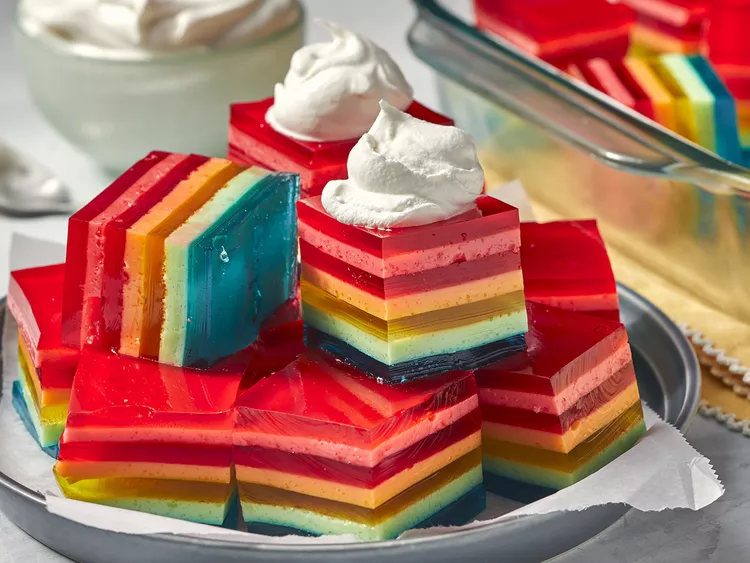

Ensalada de gelatina de siete capas

Description
No esperes hasta el último minuto para hacer esta receta. Cada capa debe
cuajar antes de agregar la siguiente.
Ingredients
-
7 paquetes (3 onzas) de mezcla de gelatina Jell-O® con sabores variados
de frutas
- 4 ½ tazas de agua hirviendo, divididas
- 4 ½ tazas de agua fría, divididas
- 1 lata (12 onzas líquidas) de leche evaporada, dividida
- 1 envase (8 onzas) de cobertura batida congelada, descongelada
Steps
- Cubre un plato de 9x13 pulgadas con aceite en aerosol.
-
Disuelva un paquete de gelatina en 3/4 de taza de agua hirviendo.
Agregue 3/4 de taza de agua fría. Vierta la mezcla en una cacerola y
refrigérela hasta que esté casi lista, 45 minutos.
-
Disuelva otro paquete de gelatina en 1/2 taza de agua hirviendo. Agregue
1/2 taza de agua fría y 1/2 taza de leche evaporada. Vierta la mezcla
sobre la primera capa y refrigere hasta que esté casi listo, 45 minutos.
-
Repita los pasos 2 y 3 hasta que se haya usado toda la gelatina. Justo
antes de servir, cubra con crema batida.
VOLVER